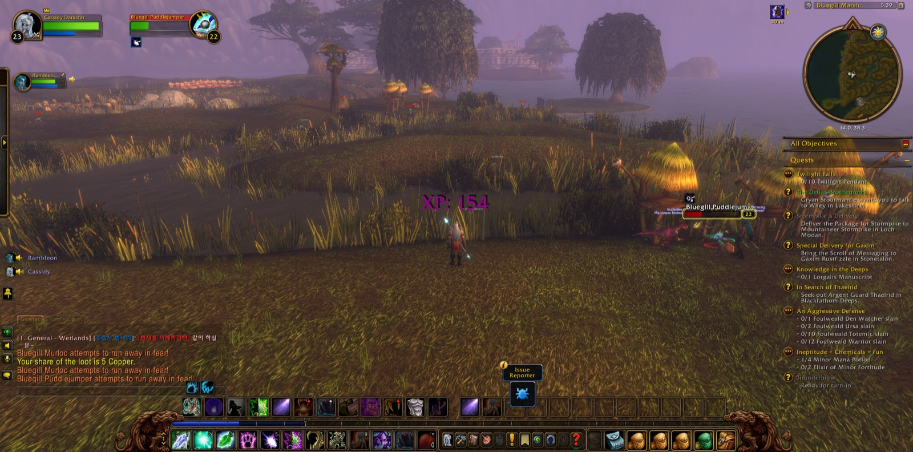
Cassidy Darkstar set out from the Deepwater Tavern in Menethil Harbor, and at the very start of the road he joined company with Rambleon, a hunter, who would walk beside him for the greater part of that long night and be counted the truest of his companions. Together they went out by Menethil Bay and Baradin Bay into Bluegill Marsh, where the Bluegill murlocs fell before them. Cassidy marked the place with pictures, as a traveller does when he wishes to remember. From there the way led past The Lost Fleet and on through Sundown Marsh and Saltspray Glen. The marshes were not kind to him, and he fell there once, but he rose and went on, and the crocolisks of the Wetlands gave way.
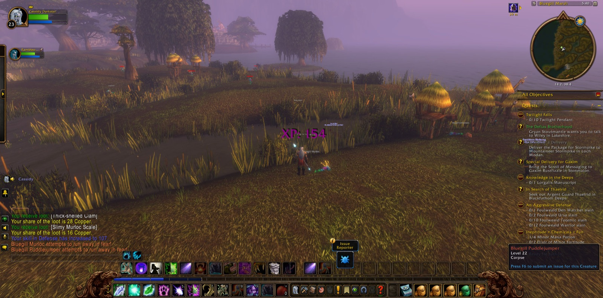
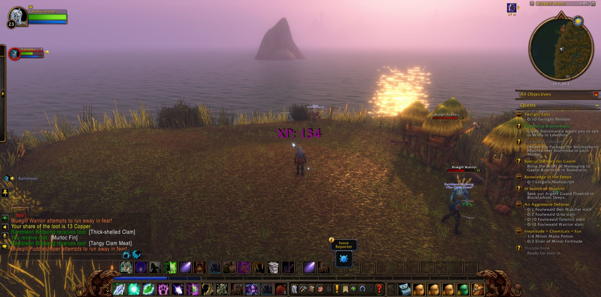
Beyond Sundown Marsh a second hunter, Natcho, joined them, and kept faith with them through all the fighting that followed. They came to Angerfang Encampment, and there the chief labour of the night was done. Dragonmaw Raiders beyond counting, Bonewarders and Swamprunners, Centurions and Shadowwarders, and the skeletons that walked among them were overcome. Cassidy took down all eight of the Dragonmaw War Banners, and one by one he destroyed the orcs' attack plans against Menethil Harbor, Southshore, Thelsamar and Ironforge itself. Dazzs, a rogue, stood with them for a short while in that place, and Paladonald the paladin and Quad the mage lent their strength briefly at the last. Picture after picture was taken in the encampment, as though Cassidy knew these were deeds worth keeping. Then the others went their ways, and he returned to Menethil Keep. There "War Banners" and "From the Ashes" were set down as done, and a new errand, "Nek'rosh's Gambit", was laid upon him.
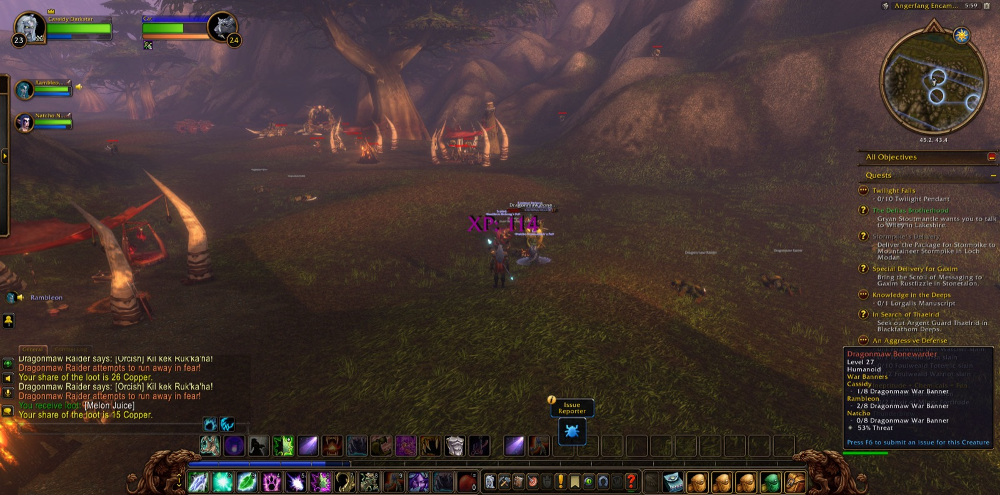
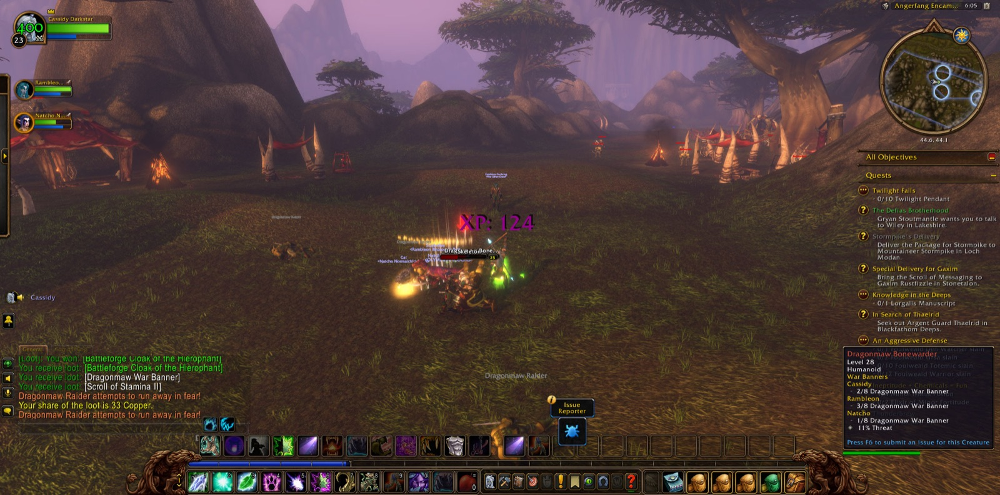
In the Deepwater Tavern he found a Flagon of Dwarven Honeymead and so finished "The Third Fleet", and he took up "The Cursed Crew" after it. Then he went east again to The Green Belt, where "The Greenwarden" was answered and "Tramping Paws" begun. Jaxsul, a shaman, and Kalos, a druid of his own calling, kept company with him for a stretch among the whelps, red and crimson, lost and flamesnorting, and the Maddened Rotclaws. By Direforge Hill he gathered eight Pristine Crimson Scales, and back in Menethil Harbor "Crocs of the Sky" was fulfilled.
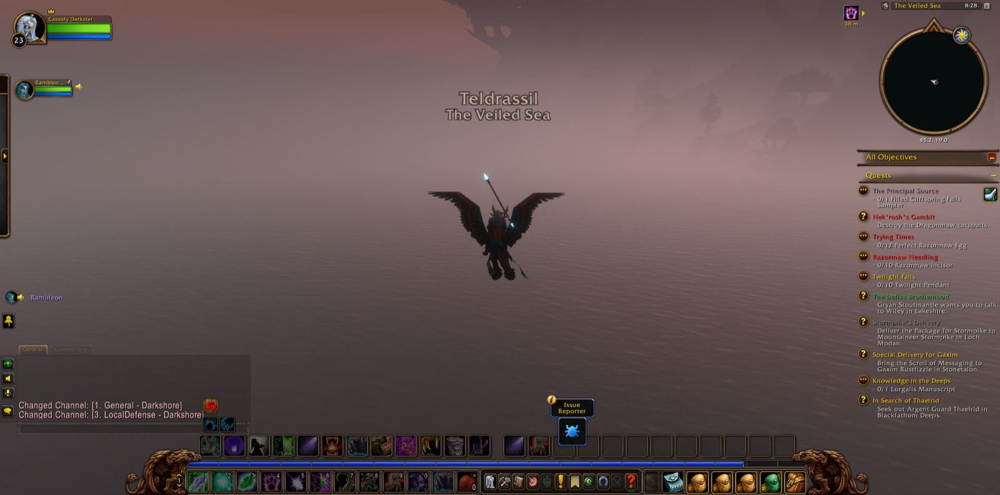
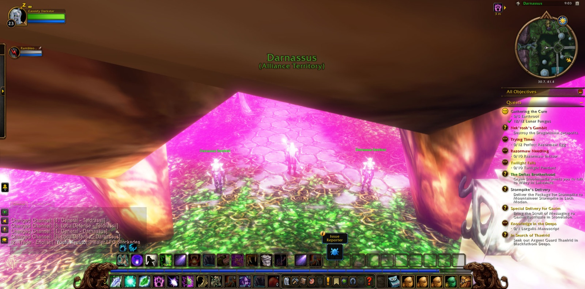
After that the road turned homeward, to the lands of his own people. He came to Nighthaven in Moonglade and passed Lake Elune'ara into Darkshore, by the Ruins of Mathystra and Mist's Edge, over The Veiled Sea to Rut'theran Village and back again to Auberdine. Up the Cliffspring River he went to Cliffspring Falls and filled the sampler there, and so "The Principal Source" was seen through. "Gathering the Cure" followed, and he gathered twelve Lunar Fungus for it. At last he climbed into Darnassus and wandered its terraces and the Temple Gardens. There Rambleon parted from him, after a long road shared. Cassidy went alone by Ameth'Aran and came again to the Deepwater Tavern, where he took one last picture. The errands of Nek'rosh and the cursed crew still waited, and the road ran on beyond the harbour.
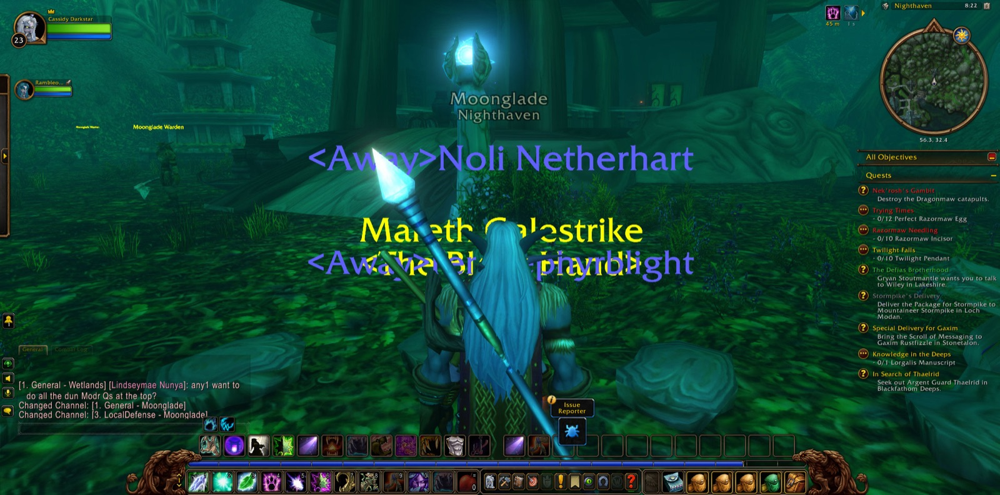
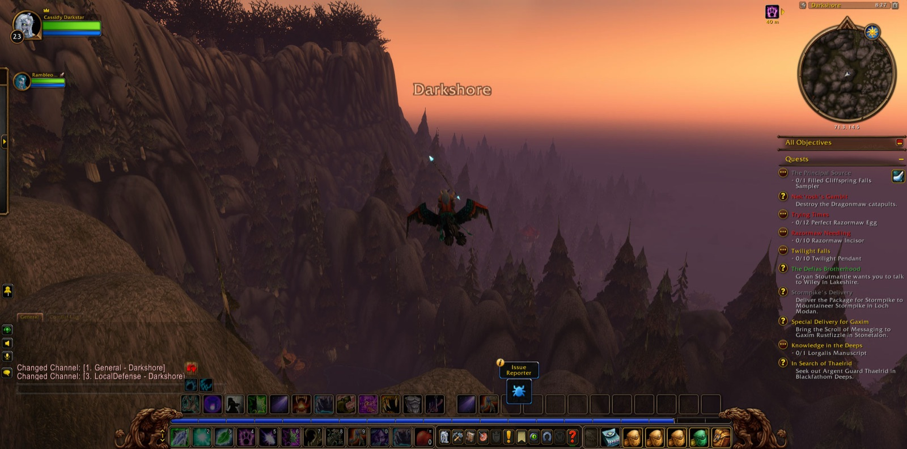
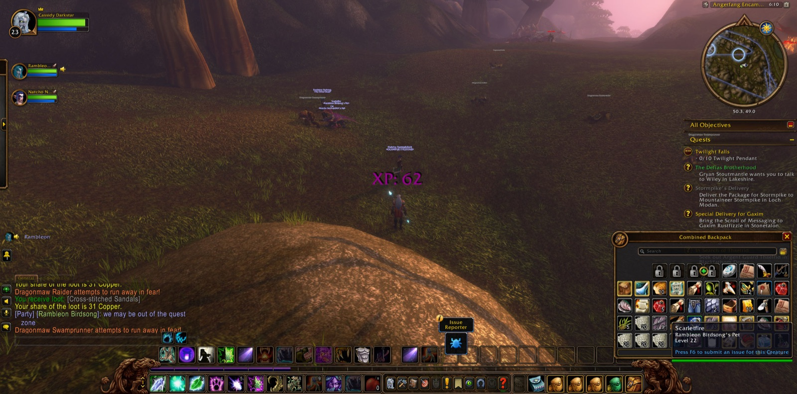
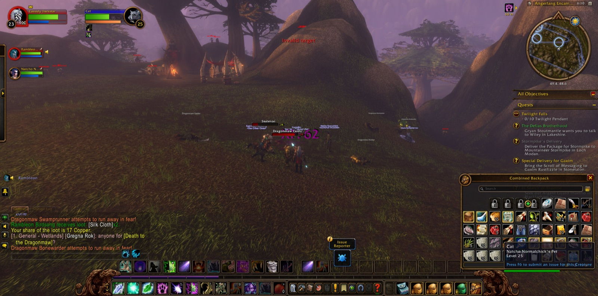
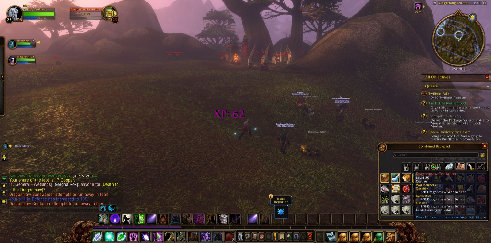
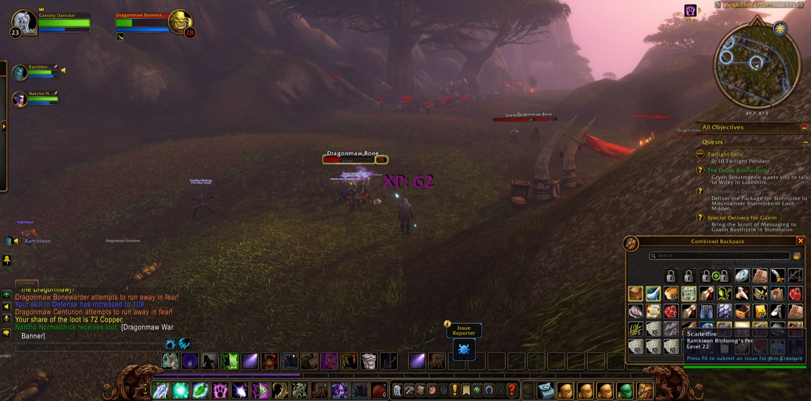
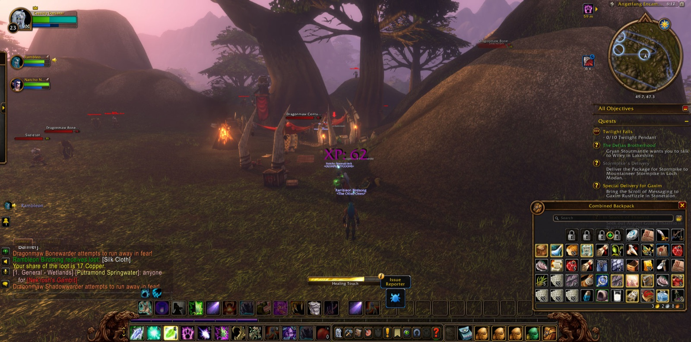
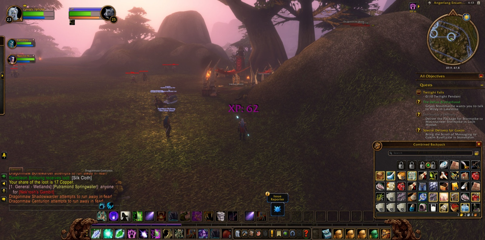